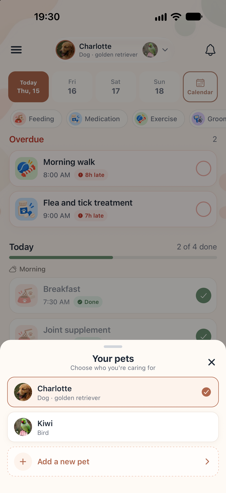

PETTO
MULTI-PET
One app. Every pet in the
house.

Switch pets in one tap
Each has their own routine
Dogs, cats, birds and more
Charlotte's walks. Kiwi's seeds. Never mixed up.
Free on iOS & Android
Link in bio